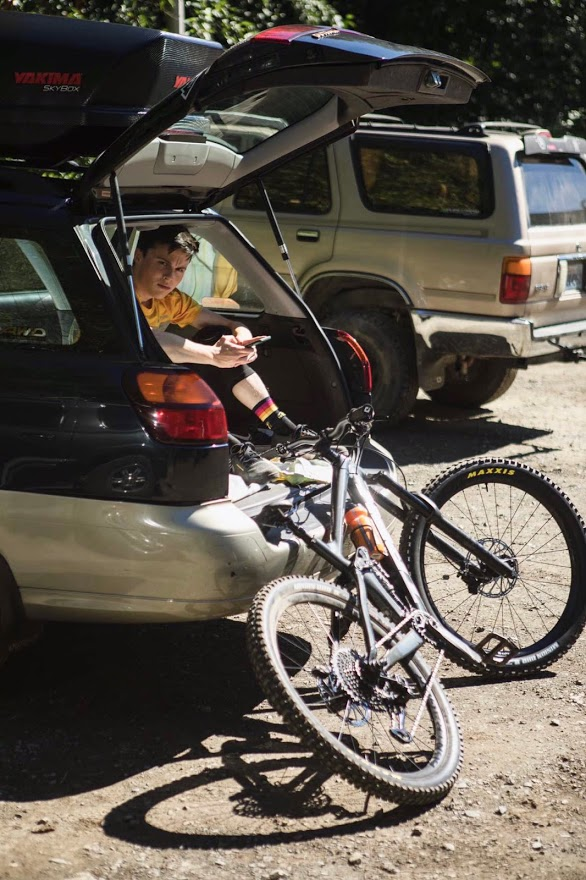

About Me
My name is Quinton Price. I'm 20 years old and from the Seattle area. I'm currently majoring in Computer Science at Walla Walla University, where I will graduate in June of 2023. I enjoy biking, skiing, cars, technology and nature.
Biking has always been a a huge part of my life. I have been biking since I can remember. In fact, some of my earliest memories are falling off of my bike (which is probably not a good thing).
Growing up, my dad got me into mountain biking and took me out as often as he could. In his younger years, and for some time while I was young, my dad raced mountain bikes recreationally. My family would pile into our van and drive out to his races, with my mom and I setting up chairs to watch and cheer as he rode past.
Fast forward 14 or so years, and I still have the same passion for mountain biking that I did as a kid (although I now have to fund it myself instead of relying on my dad to convince my mom a new bike was "neccesary"). I frequently ride my local trails - Duthie Hill, Tiger Mountain and Swan Creek. I enjoy jumps and flow, though technical riding has been something I have come to appreciate more and plan to improve on in the future.
Bike Setup
In September of 2019, I bought a 2018 Trek Fuel Ex 8. While I enjyoed the bike, it did not have enough travel for the type of riding I enjoyed.
Recently, in July 2020, I purchased a 2021 Trek Remedy 8. Below are notable specs and components, with product linkss:
- Bike: 2021 Trek Rememdy 8, Size 17.5
- Travel: 160mm (front) and 150 (rear)
- Rear Shock: Rockshox Super Deluxe Select+
- Fork: Rockshox Lyrik Select+
- Front Tire: Maxxis Minon DHRII MaxTerra / Evo Compound, 27.5x2.6
- Rear Tire: Maxxis Minon DHRII Maxterra / Evo Compound, 27.5x2.6
- Pedals: Raceface Chester
- Grips: ODI Elite Pro
- Weight: 31.01 lbs
- Tire Pressure: 22 PSI (front) and 24 PSI (rear)
- Fork Pressure: 60 PSI
- Shock Pressure: 140 PSI